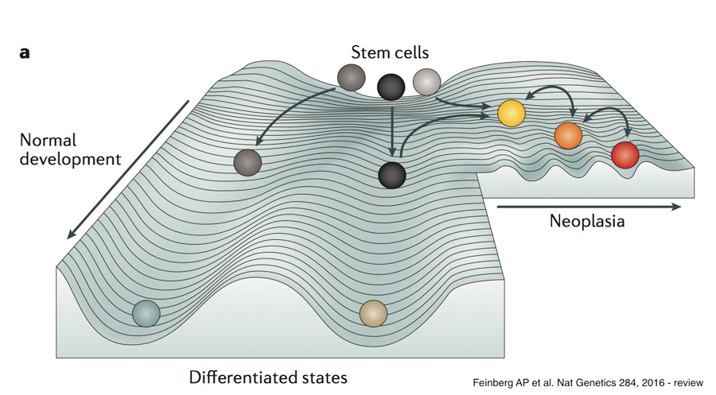
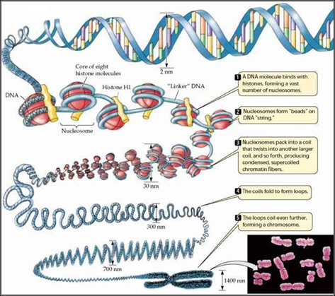
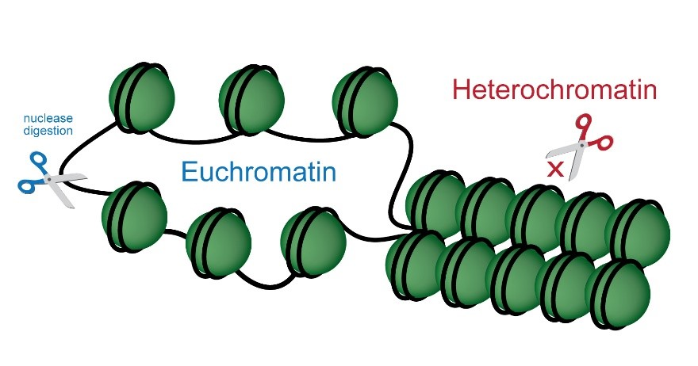
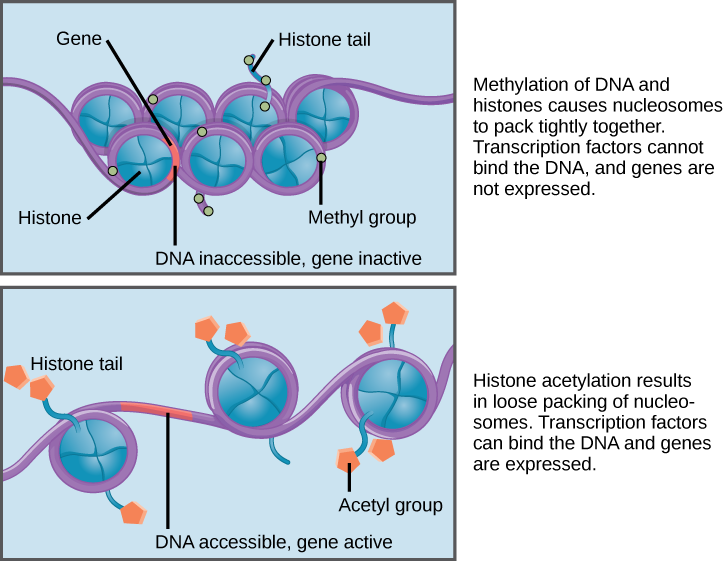

From Landscape to Loop: A Biological View of Epigenetics
Every cell in the human body contains nearly the same DNA sequence. Yet neurons fire, hepatocytes metabolize, and immune cells respond to pathogens. The genome is constant. What changes is how it is used.
Epigenetics describes the biological mechanisms that determine when and where genes are active — without altering the underlying DNA sequence. It is the layer of regulation that shapes development, maintains cellular identity, and mediates how environment influences disease risk.
1. The Epigenetic Landscape

The developmental biologist Conrad Waddington proposed the metaphor of an epigenetic landscape. A marble rolling down a hill encounters branching valleys. Each valley represents a stable developmental path — a differentiated cell type.
The genome does not change as cells differentiate. Instead, regulatory constraints accumulate, progressively restricting which genes can be expressed. Cell fate becomes canalized.
Epigenetics provides the molecular basis for these constraints.
2. DNA Packaging: The Physical Foundation

Nearly two meters of DNA must fit inside a nucleus only a few microns wide. DNA wraps around histone proteins to form nucleosomes. These nucleosomes fold into higher-order chromatin structures.
Tightly packed regions (heterochromatin) are generally transcriptionally silent. Loosely packed regions (euchromatin) are more accessible to transcription machinery.
Gene regulation begins with physical access.
3. Chromatin Accessibility

Open chromatin allows transcription factors to bind DNA. Closed chromatin restricts access.
Accessibility varies across cell types and developmental stages. An enhancer accessible in a T cell may be closed in a neuron.
Accessibility defines regulatory potential.
4. Histone Modifications

Histone proteins contain flexible tails that can be chemically modified. Acetylation generally correlates with open chromatin. Methylation can either activate or repress, depending on context.
These modifications influence how tightly DNA interacts with histones and which regulatory proteins are recruited.
The combination of these marks contributes to chromatin state.
5. DNA Methylation
DNA methylation typically occurs at CpG dinucleotides. Addition of a methyl group to cytosine often represses transcription, especially when present at gene promoters.
Unlike many histone modifications, DNA methylation can be relatively stable and heritable through cell division.
It contributes to long-term gene silencing and developmental memory.
6. Enhancers and Promoters
Promoters lie near transcription start sites. Enhancers may be located thousands of base pairs away.
Transcription factors bind enhancers and influence promoter activity, often through physical DNA looping.
Cell-type specificity arises because different cells activate different enhancer repertoires.
7. Three-Dimensional Genome Organization
The genome is not organized linearly inside the nucleus. Chromatin folds into loops and domains.
These structural domains constrain which enhancers can contact which promoters. Spatial organization therefore contributes to regulatory specificity.
Regulation is not only chemical — it is architectural.
8. Immune System and Epigenetic Memory
Environmental exposure can reshape chromatin landscapes. Immune cells, for example, can exhibit “trained immunity,” where prior exposure alters future responsiveness.
Cytokine signaling can remodel chromatin accessibility and histone marks, modifying transcriptional potential.
Epigenetics links environment and immune function.
9. The Exposome and Disease
Early-life exposures — infection, maternal immune activation, pollution — can influence epigenetic programming.
These molecular changes may alter immune development and contribute to long-term susceptibility to conditions such as asthma.
Epigenetics does not change the genome. It changes how the genome is interpreted.
Closing Perspective
From developmental landscapes to chromatin loops, epigenetics provides a framework for understanding how a static genome produces dynamic biology.
It explains how cells differentiate, how immune memory forms, and how environmental exposures become biologically embedded.
The genome encodes possibility. Epigenetics shapes realization.